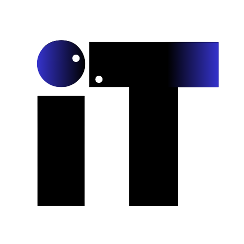

브랜드 · Brand
Brand identity
The IT mark — a stout wordmark with an indigo spherical accent over the "I" — is the only identity element. No product sub-brands, no mascots, no illustrations. The mark sits on white; in dark mode it is inverted via CSS.
Logo · primary / inverted

assets/logo.png · on white
dark:invert · on zinc-900
Size · scales down to 24 px header mark
Clear space · 0.5× mark height on all sides
Don't
Gradient bg
Only login card uses blue→indigo gradient, never behind the mark.
Skew or rotate
The mark is always upright and un-transformed.
Recolor
Only two treatments: black mark + indigo sphere, or fully inverted.
Voice · do / don't
✓ Do — institutional, noun-led
- 사원번호와 비밀번호를 입력해주세요.
- 결재 대기 7 · 3건 처리지연
- © 2026 IT기획부. All rights reserved.
- 문의사항은 IT기획부 IT기획팀에 연락해주세요.
✕ Don't — casual, "you", exclamations
- 예산 작성하러 가볼까요? 😊
- 당신의 결재를 기다리고 있어요!
- 오류났어요! 다시 해주세요!!
- Hey, welcome back — let's get started.
Color usage on the mark
The indigo sphere on the mark matches --indigo-600 · #4f46e5, the product's primary brand hue. The wordmark is near-black (zinc-900 · #18181b) in light mode, pure white in dark mode via filter: invert(1).